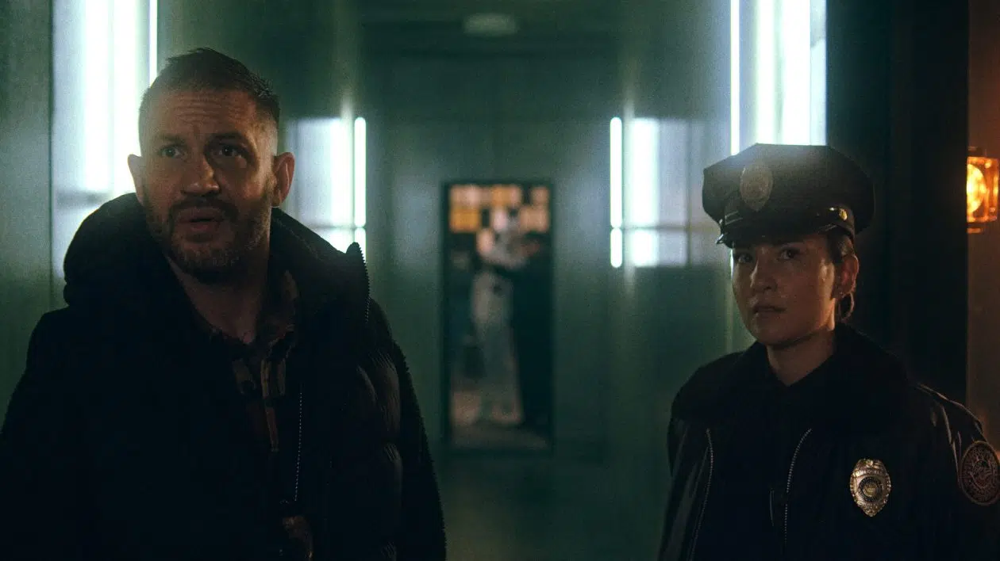

Un thriller sombre et explosif
Ravage (titre original : Havoc) est un thriller d'action réalisé par Gareth Evans, connu pour ses films nerveux comme The Raid et la série Gangs of London. Le film sortira exclusivement sur Netflix le 25 avril 2025.
Pourquoi ce film est-il attendu ?
Les fans de films d'action connaissent Gareth Evans pour son style brutal et efficace. Avec Tom Hardy en tête d'affiche, Ravage promet des scènes d'action intenses et un scénario haletant.
Synopsis
Après une affaire de trafic de stupéfiants qui tourne mal, Walker, un détective interprété par Tom Hardy, se lance dans une course contre la montre pour sauver le fils d’un politicien influent. Dans sa mission, il se retrouve plongé au cœur d’un réseau criminel où corruption et trahisons règnent.
Un casting impressionnant
- Tom Hardy : Walker
- Forest Whitaker : Inspecteur Gates
- Timothy Olyphant : Agent Marshall
- Jessie Mei Li : Ellie
- Justin Cornwell : Officier Ryan
- Yeo Yann Yann : Dr. Tan
- Luis Guzmán : Chef du cartel
- Sunny Pang : Tueur à gages
- Michelle Waterson : Agent infiltré
- Quelin Sepulveda : Hacker
- Xelia Mendes-Jones : Johnny 
Un développement chaotique
Le film a été tourné entre juillet et octobre 2021, mais il a connu une longue période de silence. Après des retours mitigés, Netflix a décidé de commander des reshoots qui se sont achevés en juillet 2024. La post-production prolongée a repoussé sa sortie jusqu'en avril 2025.
Une ambiance sombre et percutante
Le teaser dévoilé promet un film intense, avec des scènes de combat rapproché, des fusillades et des courses-poursuites haletantes. La photographie est signée Matt Flannery, collaborateur régulier de Gareth Evans, ce qui garantit un style visuel brutal et immersif.
Découvrez la bande-annonce
Découvrez la bande-annonce en cliquant juste ICI
Rendez-vous en avril !
Les amateurs d'action et les fans de Tom Hardy pourront découvrir Ravage sur Netflix à partir du 25 avril 2025.